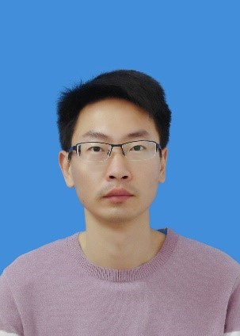
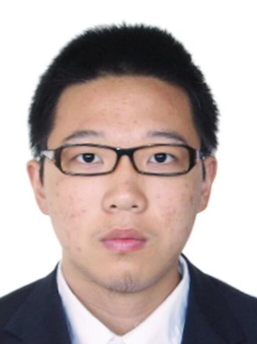
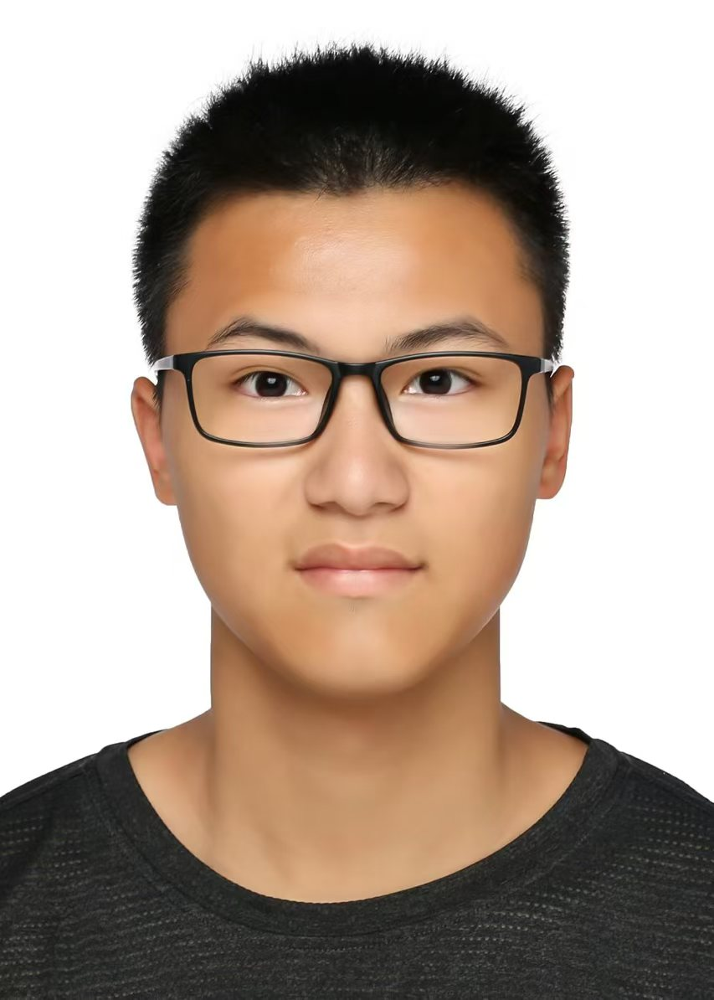
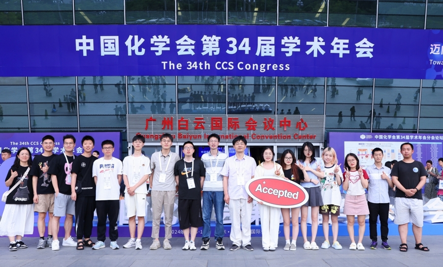
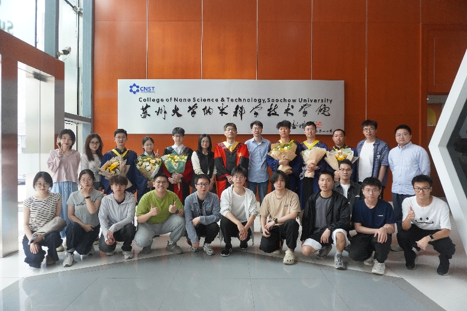

纪玉金 副教授
基于多尺度模拟方法，探究二维材料表面微观原子结构及形貌的动态演变过程，解析材料微观结构变化规律。
从原子-电子层面，揭示二维材料表面化学反应机制，明确反应过程中的关键步骤与影响因素。
建立二维材料微观结构与宏观性能之间的构效关系，为材料性能优化提供理论依据。
结合二维材料数据库，开展新型能源材料的高通量筛选，快速挖掘具有潜在应用价值的材料体系。
基于理论模拟结果，进行二维能源材料的定向设计与性能优化，开发适用于能源存储与转化的新型材料。

博士研究生 | 入学年份：2024
研究方向：电池材料模拟与设计
邮箱：1036654816@qq.com

硕士研究生 | 入学年份：2024
研究方向：原神，启动！
邮箱：1347024802@qq.com

课题组参加中国化学会第34届学术年会，在广州白云国际会议中心前合影留念，庆祝研究成果被学术年会接受。
2024.6.17
课题组2025届学生顺利完成毕业答辩，学生与教师合影留念。
2025.5.24至今参与发表69篇SCI期刊论文，Google scholar总引用1120次，H-index为19。